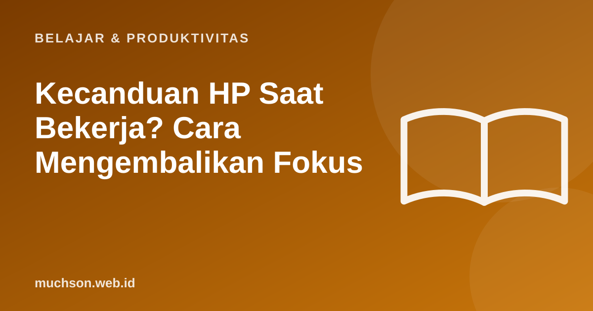

Beranda › Artikel › Belajar & Produktivitas
Belajar & ProduktivitasKecanduan HP Saat Bekerja? Cara Mengembalikan Fokus
Niatnya hanya mengecek satu pesan, tahu-tahu 20 menit berlalu di media sosial. Kembali ke pekerjaan pun terasa berat. Ini bukan semata soal lemah kemauan. HP dan aplikasinya dirancang untuk menarik perhatian, dan otak kita membayar mahal setiap kali beralih tugas. Kabar baiknya, beberapa perubahan pengaturan dan kebiasaan bisa mengembalikan fokus.

Biaya tersembunyi dari interupsi
Gloria Mark dan rekan (2008) dari University of California, Irvine, meneliti pekerja yang diinterupsi. Mereka menemukan orang cenderung bekerja lebih cepat setelah diinterupsi untuk mengejar ketertinggalan, tetapi dengan harga yang lebih mahal: tingkat stres, frustrasi, dan beban kerja yang dirasakan lebih tinggi. Selain itu, saat beralih dari satu tugas ke tugas lain, sebagian perhatian kita masih tertinggal di tugas sebelumnya, sehingga fokus tidak langsung pulih.
Bahkan tanpa notifikasi, HP tetap mengganggu. Eksperimen Ward dan rekan (2017) menemukan peserta yang HP-nya berada di meja (walau dalam keadaan diam) memiliki kapasitas kognitif yang tersedia lebih rendah dibanding peserta yang HP-nya diletakkan di ruangan lain.
Bukan hanya membuka HP yang mengganggu. Menahan diri untuk tidak membukanya juga memakai energi mental. Menjauhkan HP secara fisik lebih efektif daripada sekadar bertekad.
Ukur dulu
Periksa laporan waktu layar di HP (Digital Wellbeing di Android, Durasi Layar di iPhone). Perhatikan dua angka: total waktu layar dan jumlah membuka kunci (pickups) per hari.
Langkah praktis
1. Rapikan notifikasi
- Matikan notifikasi semua aplikasi kecuali yang benar-benar penting (telepon, pesan dari orang tertentu, kalender).
- Matikan "lencana" angka merah di ikon aplikasi media sosial.
- Ubah grup WhatsApp yang ramai menjadi senyap.
2. Mode fokus
Android punya Mode Fokus di Digital Wellbeing, iPhone punya Fokus. Atur mode kerja yang hanya mengizinkan kontak dan aplikasi tertentu, dan jadwalkan otomatis pada jam kerja.
3. Blok kerja mendalam
Jadwalkan 1-2 blok 60-90 menit setiap hari untuk pekerjaan yang butuh konsentrasi tinggi. Selama blok ini: HP di ruangan lain atau di laci, email dan chat ditutup.
4. Buat HP kurang menarik
- Pindahkan aplikasi media sosial dari layar utama ke folder.
- Keluar (logout) dari aplikasi yang paling menyita waktu, sehingga butuh usaha untuk membukanya.
- Gunakan mode layar abu-abu (grayscale) pada jam kerja bila tersedia.
- Isi daya HP di luar kamar tidur.
Daftar periksa
Tanya jawab
Kenapa sulit fokus karena HP?
Bagaimana cara mengurangi main HP saat bekerja?
Apa itu deep work?
Apakah mode layar abu-abu membantu?
Sumber dan bacaan lanjut
- Mark, G., Gudith, D., & Klocke, U. (2008). The cost of interrupted work: More speed and stress. CHI
- Ward, A. F. dkk. (2017). Brain Drain. Journal of the Association for Consumer Research
- Teknik Pomodoro (artikel terkait)